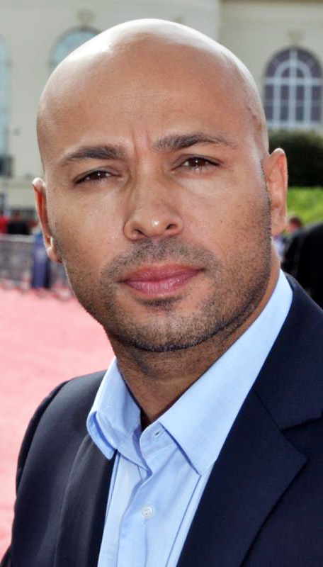
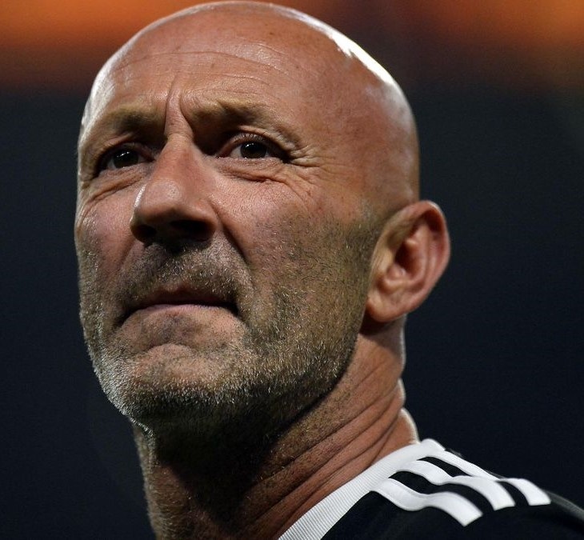
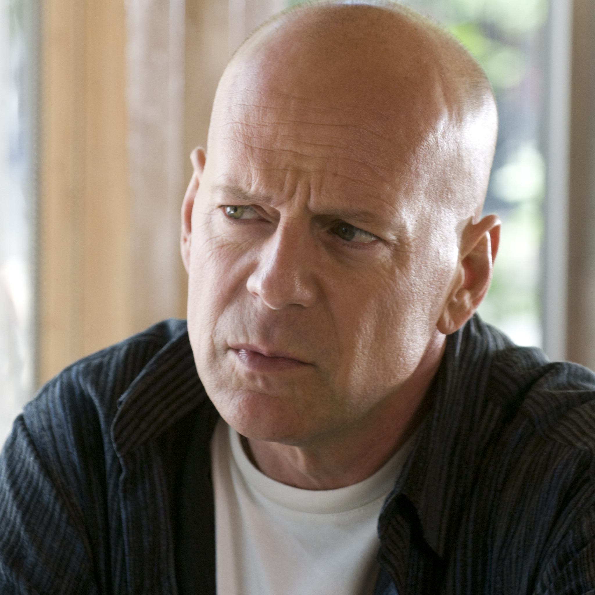
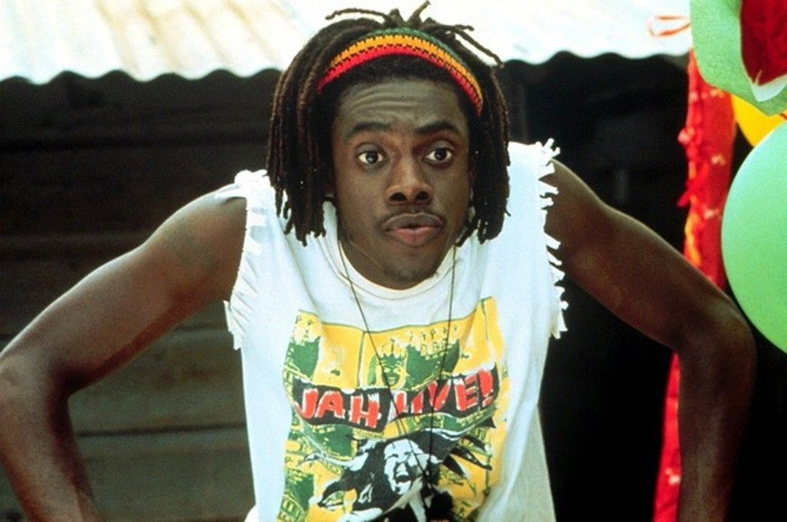
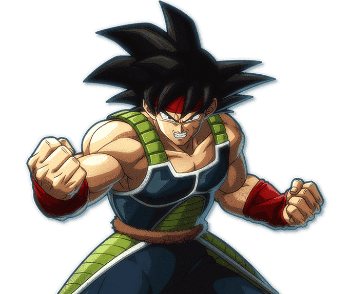
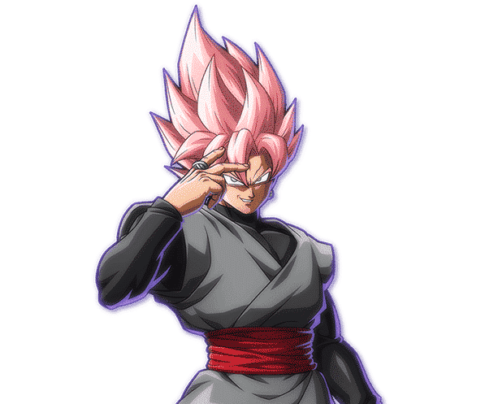
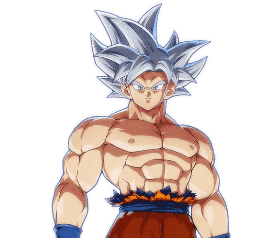
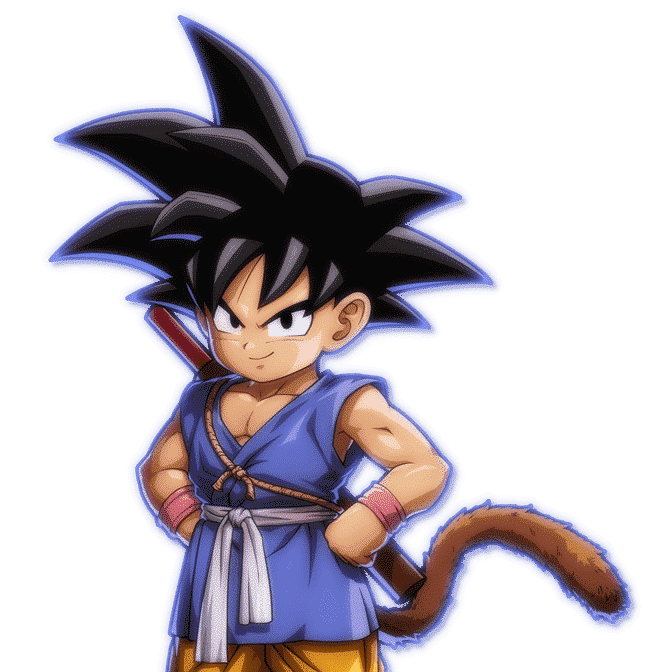
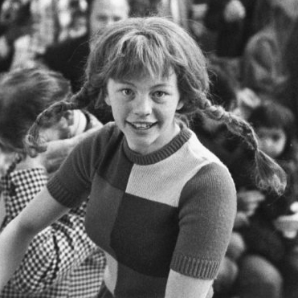

Question'hair interac'tif
Encore un truc à s'arracher les cheveux
Laquelle de ces enseignes n'existe pas ?
Cliquer pour sélectionner
JQu'Hair'y
Laque's à Tif
Adult'hair
D'aussi loin que la mémoire collective se souvient, laquelle/lesquelles de ces personnalités ont déjà eu des cheveux ? (en public)
  
The Rock
Eric Judor
Fabien Barthez
Bruce Willis
Qui a parlé dans un de ses sketchs des "cheveux chauves" ?
Cliquer pour sélectionner
Jamel Debbouze
Karim Debbache
Les inconnus
Comment s'appelle la coupe de Princesse Leia de la saga Star Wars ?
Coupe Macaron
Coupe Escoffion
Double pain aux raisins rabattu sur les oreilles

Quelle est la taille du plus long dreadlock du monde ? (en mètres)
10
Lequel de ces personnages n'est pas Goku ?





Quelle est la couleur des cheveux de Fifi Brindacier ? (utiliser les couleurs de base)
A partir de quel âge se développe la calvitie chez l'homme ? (entre 20 et 40)
A quel rappeur appartient ce mythique bouc ?
Dans Funky Cops, quelles sont les coiffures des deux protagonistes ?
Afro
Banane
Mulet
Iroquois